FlyRank internship: the full project portfolio
The capstone paper answers one narrow question carefully. This page collects everything else built during the internship: exploratory analysis, missing-data experiments, baselines, classifiers, a regression model, SHAP explanations, segmentation, PCA, anomaly detection, and the warehouse-scale Content Refresh Recommendation Engine.
Overview
Two datasets were used. The starter CSV has 30,000 anonymized pages from 32 clients, with trailing 90-day metrics and a supplied trend_direction label. The warehouse release has 78.8 million daily rows (January 2025 to June 2026), 519,606 content items and 104 client records, queried in place with DuckDB over Hugging Face.
| Task | Data | Method | Headline (as recorded) |
|---|---|---|---|
| Exploratory analysis | CSV | Distributions, correlations, signal tests | Decline rate peaks at positions 6–22 (about 61%); search volume barely tracks traffic (r = 0.001) |
| Missing-data strategies | CSV + warehouse | Drop vs median vs MICE vs KNN; masking benchmark | Dropping rows loses 75% of the data; imputation choice barely changes model scores |
| Heuristic baseline | CSV | Stale + traffic rule vs random forest | P@50 0.64 (rule) vs 0.68 (forest) on 8 unseen clients |
| Classifiers | CSV | LR, RF, XGBoost, LightGBM, CatBoost | 3-class status: about 0.55 balanced accuracy; binary needs-refresh: PR-AUC 0.78 (random split) |
| Regression | CSV → warehouse | XGBoost on next-30-day impressions | R² 0.74 on CSV, but 0.40 on the warehouse, below a naive "same as last month" baseline (0.63) |
| Explainability | CSV | XGBoost + SHAP aggregated to original features | ROC-AUC 0.81, mostly from previous-30-day impressions |
| Segmentation | CSV | K-Means, hierarchical, DBSCAN | 9 weak segments (silhouette 0.22); decline share ranges 34%–67% by segment |
| PCA | Warehouse | PCA on 111,247 pages | 2 components keep 61% of variance, but trend groups overlap (silhouette −0.02) |
| Anomaly detection | Warehouse | Isolation Forest, DBSCAN | 2.0% (2,225) and 4.1% (4,591) of 111,247 pages flagged for review |
| Recommendation Engine | Warehouse | Rules → LambdaRank, validation gates, tracking | NDCG@10 0.38 vs 0.26 (impressions) and 0.25 (rule) on held-out clients |
| Capstone (Milestones 1–6) | CSV | Rule vs LR vs RF, 20 client-held-out splits | P@50 0.75–0.77 vs 0.66; base rate 0.58 |
1. Exploratory data analysis
Notebooks: ExploratoryDataAnalysis · 01 First look and discovery · ML-06 Signal audit · 03 Full release
Question: what is in the data, and which common SEO beliefs hold up?
- The label is balanced: 54.2% of pages are labeled
down. - Traffic is extremely skewed. Median 90-day impressions are 731 and the maximum is 517,715. This is why later models log-transform traffic or use trees.
- Keyword search volume barely predicts actual impressions (r = 0.001, including among pages that have impressions).
- There is a CTR cliff by position. Mean CTR falls from about 0.35% on page 1 to 0.06% for deep positions (pages with at least 100 impressions).
- The "danger zone" is page 1 bottom to page 2. The decline rate is 46% for positions up to 6.2, 58% for 6.2–10.8, 61% for 10.8–22.3, and 52% beyond that. The relationship is an inverted U, not a straight line.
- Staleness alone barely matters. Pages updated within 20 days decline at 53.9%, and pages untouched for more than 104 days at 54.7%. Declining pages are younger (median age 216 days, against 292 for growing pages).
- Length is not the lever. Median word count is almost identical for
down(2,909) andup(2,848) pages.
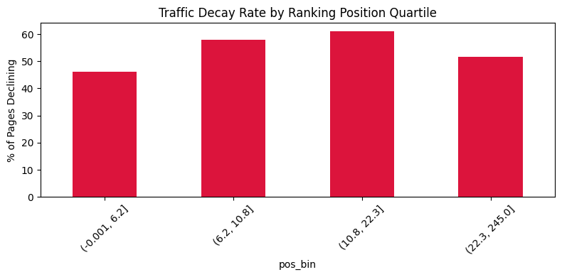
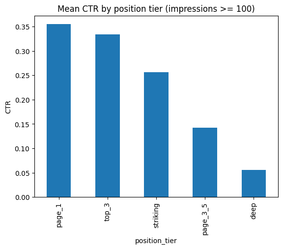
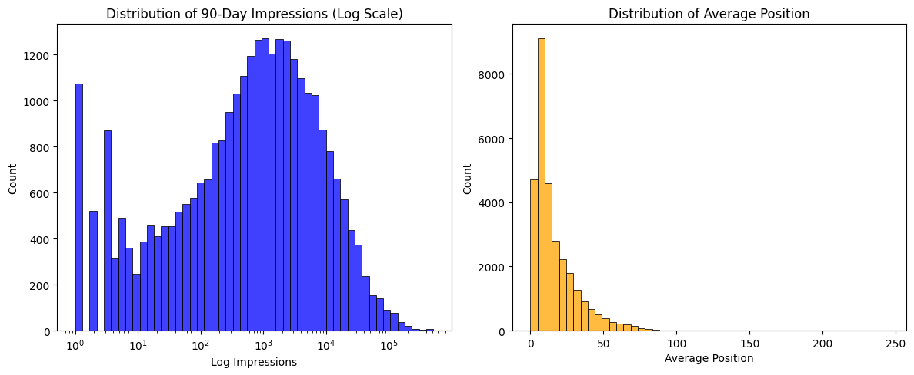
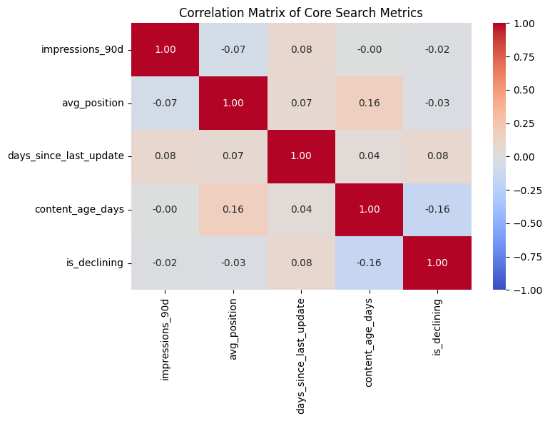
2. Missing-data strategies
Notebooks: MissingDataStrategyEvaluation · DuckDB missing-data benchmark · Milestone 2
Question: how should gaps be handled without throwing data away or inventing signal?
- Where the gaps are:
provider_used71.5%, word and character counts 25.7%,trend_pct11.3%, keyword metrics (search volume, competition, CPC) 8.2%. - Dropping incomplete rows is not viable: it keeps only 7,350 of 30,000 rows.
- Median, iterative (MICE) and KNN imputation give almost the same downstream classifier (weighted F1 about 0.84–0.85), and similar correlation structures.
- Missingness itself carries a little signal. Missing search volume correlates −0.15 with decline and missing word count −0.09. It follows content type, so a blind
fillna(0)would inject a hidden category flag. - Warehouse principle: unknown Search Console measurements are kept as missing, never zero-filled, and eligibility rules are applied before any imputation.
- Capstone decision (Milestone 2): median imputation plus missing-value indicators, fitted inside each training split, matched complete-case accuracy while keeping every row.
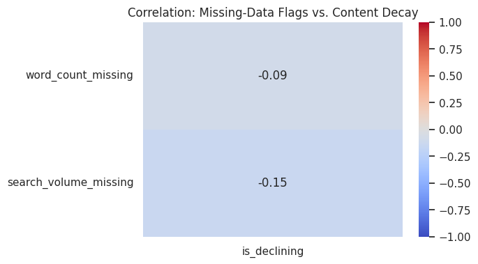
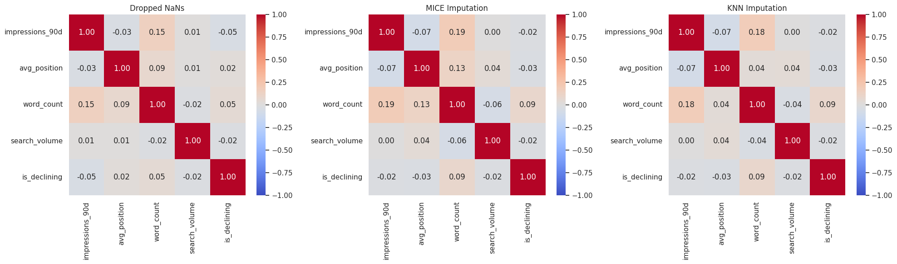
3. Readable models and the heuristic baseline
Notebooks: 02 Readable model · HeuristicBaseline · ML-07 Baseline · ML-08 Model · Capstone modeling
Question: does a learned model beat the obvious rule "stale for more than 180 days, ordered by impressions"?
- A depth-2 decision tree is a readable rule. It splits on impressions (more than 5.5) and then content age (312 days or less) → decline.
- Leakage demo: adding
trend_pctas a feature gives Precision@50 = 1.000, because the label is computed from it. That field was banned from then on. - The rule is sharp at the very top. In-sample, it reached Precision@20 of 0.90 and Precision@50 of 0.68.
- On 8 unseen clients (24 train / 8 test), Precision@50 was 0.64 for the rule, 0.56 for a depth-3 tree and 0.68 for the random forest. The forest's ROC-AUC was 0.598. Forest importance: impressions 0.29, content age 0.24, position 0.22.
- Random vs grouped split (ML-09): the same forest scored Precision@50 0.82 on a random page split against 0.68 when clients were held out.
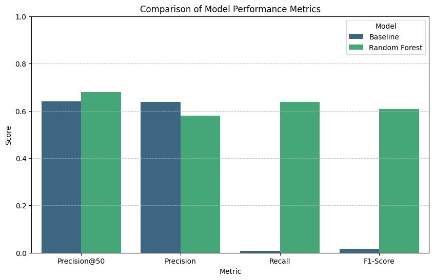
4. Classification models
Notebooks: ContentStatusPrediction · Binary classification: needs_refresh
Three-class content status (down / stable / up)
Logistic regression, random forest, XGBoost, LightGBM and CatBoost were trained on a client-grouped split (27,764 pages; new and flat merged or excluded). LightGBM was picked as the best, with roughly 0.58 accuracy, 0.55 balanced accuracy and 0.53 macro F1. Random forest had the highest raw accuracy (about 0.61) but lower balanced accuracy. stable is the hardest class: only 704 of 1,423 were predicted correctly.
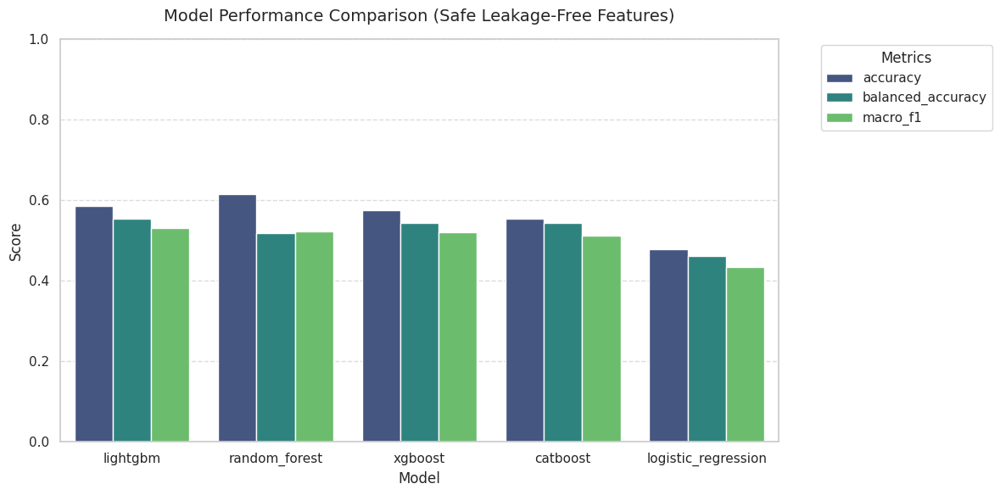
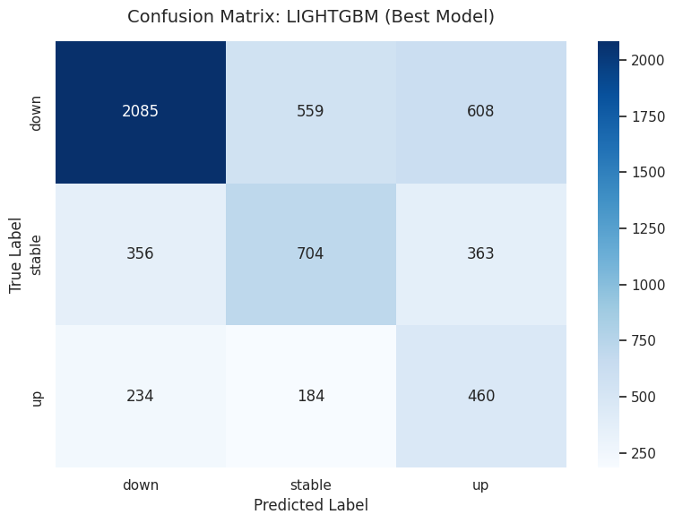
stable and up pages are often predicted as down.Binary "needs refresh" (impressions down more than 30%)
The target trend_pct < −30% was treated as a business hypothesis (47% of pages qualify; 31%–61% at thresholds from −50% to −10%). On a stratified 80/20 split, XGBoost reached ROC-AUC 0.81 and PR-AUC 0.78, random forest 0.80 and 0.76, and logistic regression 0.64 and 0.58. A threshold sweep shows the precision–recall trade-off: a 0.40 cutoff gives F1 0.74 (precision 0.64, recall 0.88).
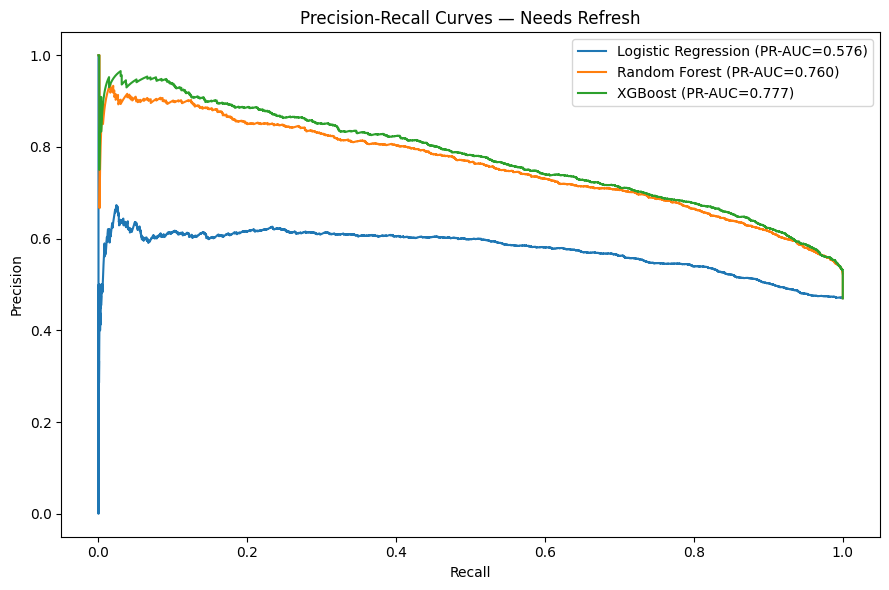
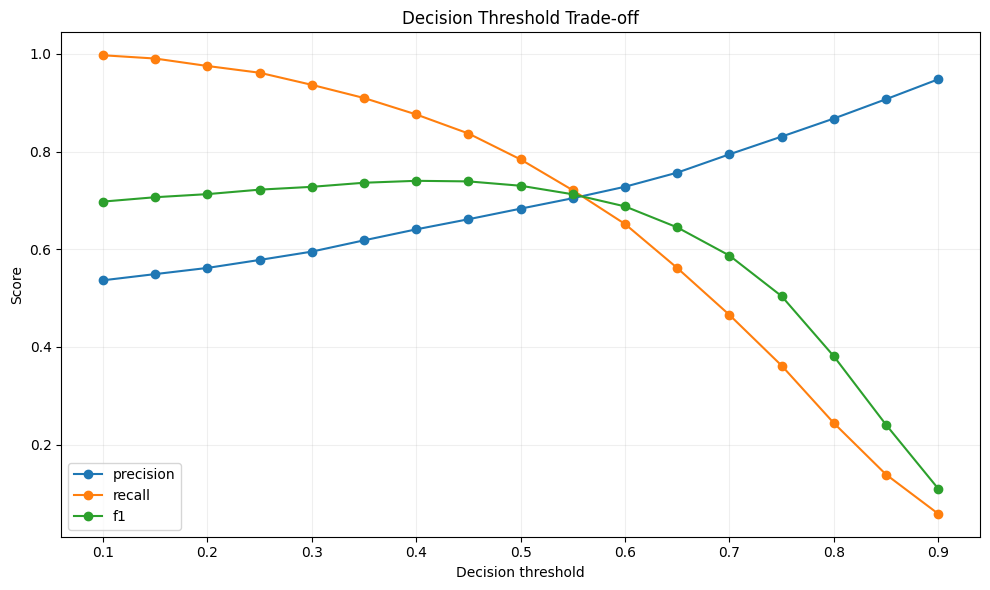
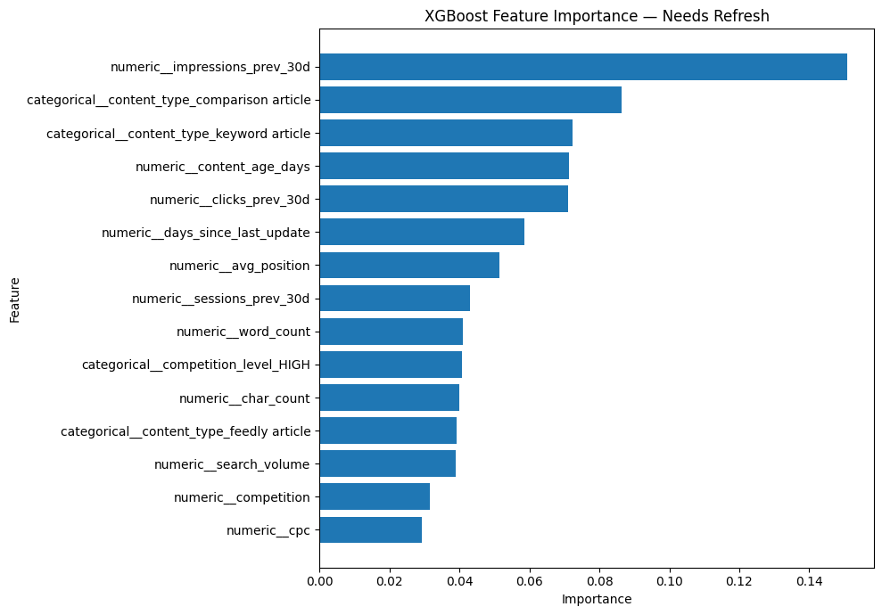
impressions_prev_30d, clicks_prev_30d and sessions_prev_30d. Previous-30-day impressions is the denominator of trend_pct, so the model partly learns the label's arithmetic. Pages with near-zero previous impressions cannot decline by 30%, and high-traffic pages tend to fall back. Combined with a random page split, this makes 0.81 AUC an upper bound. The capstone, without those fields and with clients held out, measures 0.61–0.64. The three-class model used a grouped split and is a more realistic picture.5. Regression: predicting next-30-day impressions
Notebook: Predict_30d_Impressions_with_Regression
Question: can last-30-day impressions be predicted from the previous 30 days plus content attributes?
- On the CSV (random 80/20 split), XGBoost reached test R² 0.74 and MAE 567. Train R² was 0.99, so it overfit; tuning brought train R² to 0.96 with test R² 0.72.
- Frozen and tested on 111,247 warehouse pages, the CSV-trained model scored R² 0.40 (MAE 1,099). A naive baseline that predicts "same as the previous 30 days" scored R² 0.63 (MAE 1,114). Tuning (R² 0.39) and a log-scaled target (R² 0.38) did not close the gap.
- A model trained on richer warehouse features (60-day momentum, position volatility, query mix) cut MAE from 1,074 to 689 against the naive baseline, but its R² was lower (0.58 vs 0.78), so it is worse on the largest pages.
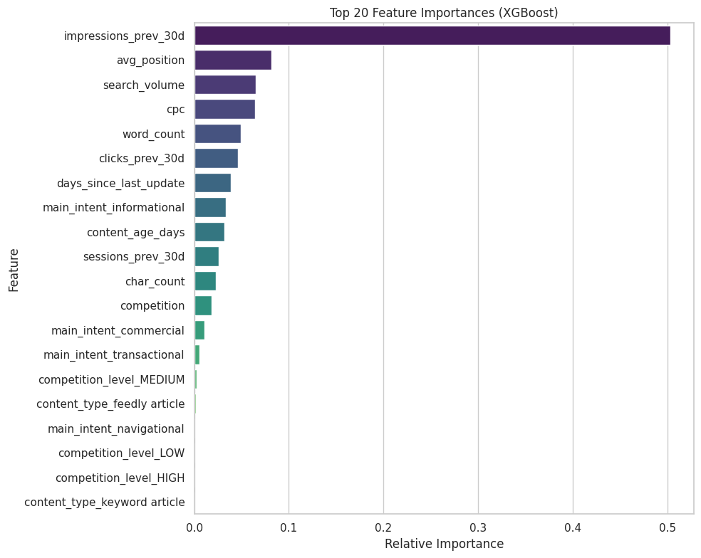
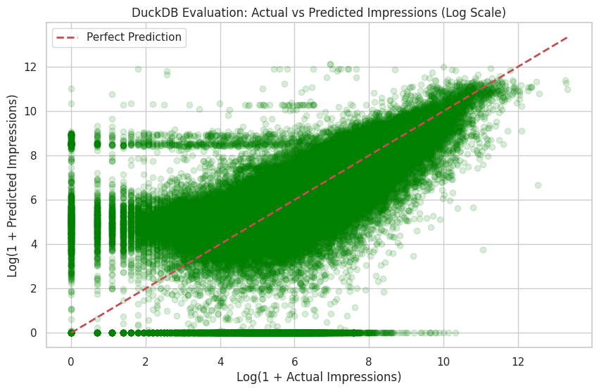
6. Explainability with SHAP
Notebook: Content_Decline_Explainability_SHAP_Aggregated
Question: why does a decline model flag a page, in terms of FlyRank's own fields rather than one-hot columns?
- The model: an XGBoost classifier for the
downlabel, with 14 original features on a stratified 80/20 split. It reached ROC-AUC 0.81 and PR-AUC 0.82. - The contribution: SHAP values were aggregated from 21 one-hot columns back to the 14 original features, so
content_typegets one contribution per page. Native importance, permutation importance and SHAP all rank features the same way. - Global ranking (mean |SHAP|): previous-30-day impressions 1.16, then previous clicks 0.31, content age 0.30 and position 0.25. Keyword competition and CPC contribute almost nothing.
- Partial dependence shows decline probability jumping from about 0 to about 0.6 as previous-30-day impressions rise from zero to a few hundred.
- The output: an article-level explanation table showing which features push each page toward or away from decline.
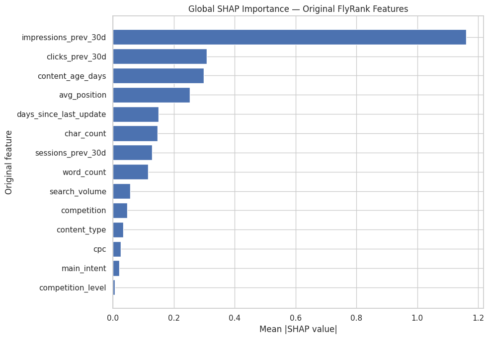
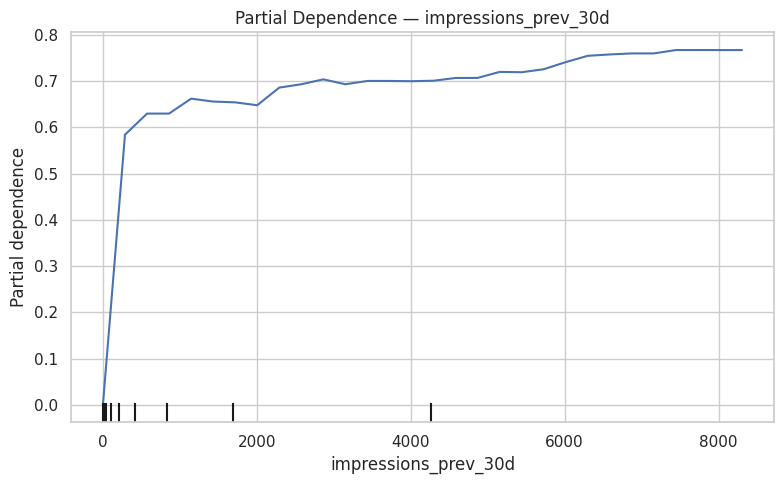
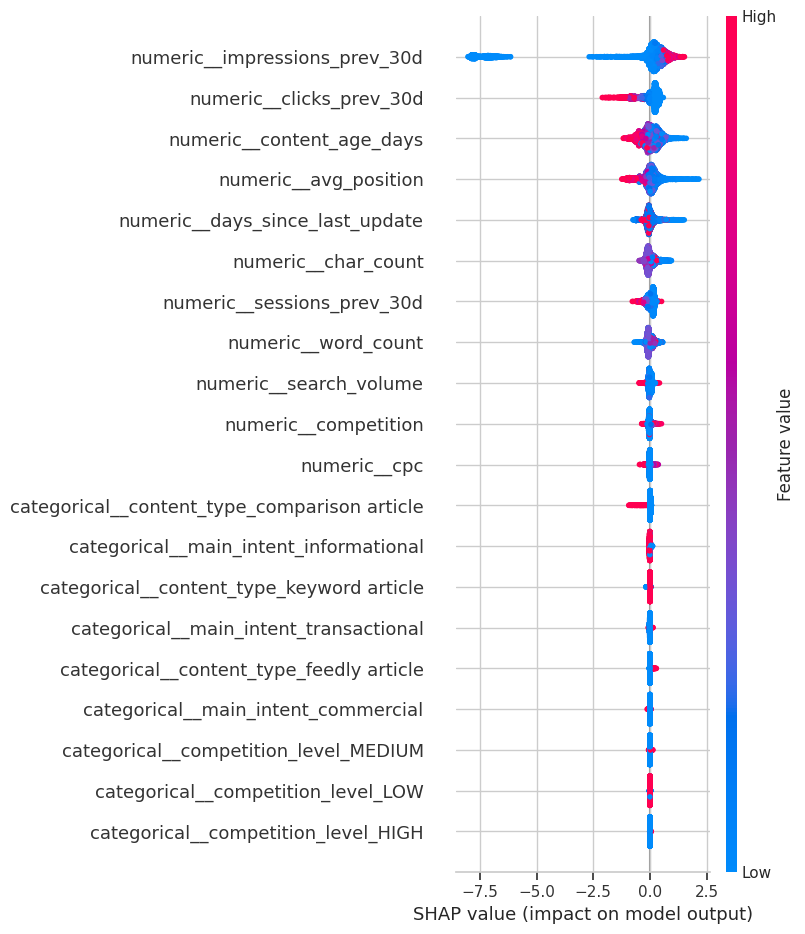
new or flat by definition. The capstone found the same artifact through missing position data. Explanations are descriptive of the model, not causes of decline.7. Content segmentation (unsupervised)
Notebooks: Content_Segmentation_Unsupervised · Content_Segmentation
Question: instead of predicting decline, what natural groups of content exist?
- Setup: 11 features (traffic, ranking, competition, content), log-transformed and standardized. Labels were used only afterwards, to interpret the clusters.
- K-Means: silhouette is best at k = 9 (0.224) but stays between 0.18 and 0.22 for every k, so structure is weak. Hierarchical clustering with 9 clusters scored 0.186.
- DBSCAN collapses to one large cluster plus 1.5% noise at its best setting, which also points to no strong density gaps.
- Segments still differ in useful ways. The decline share ranges from 34% (a low-traffic segment where 37% of pages are growing) to 67% (a high-traffic, weak-ranking segment). One segment of short pages is 27%
new. - A 2D PCA view keeps 46% of variance.
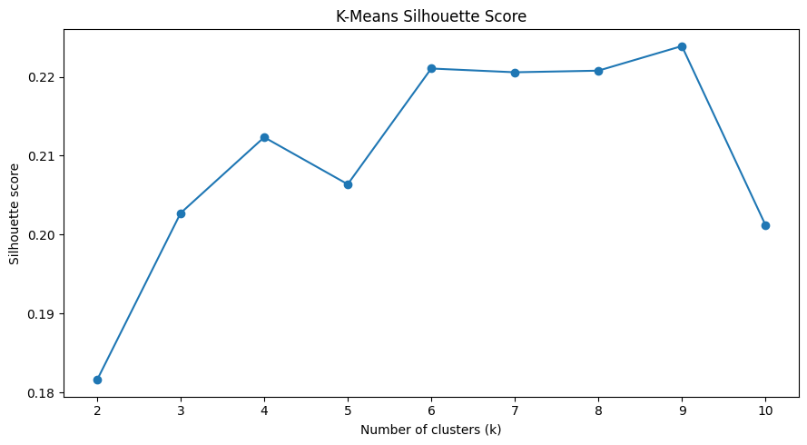
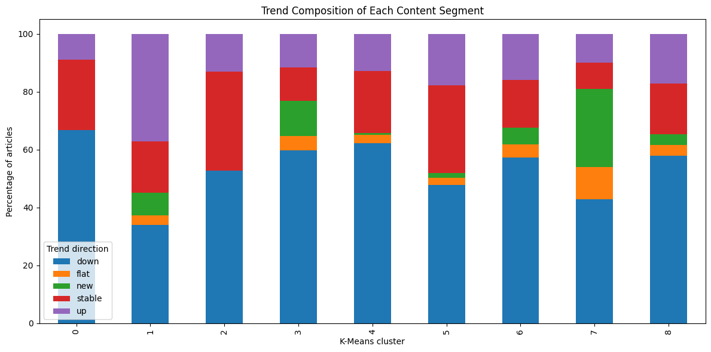
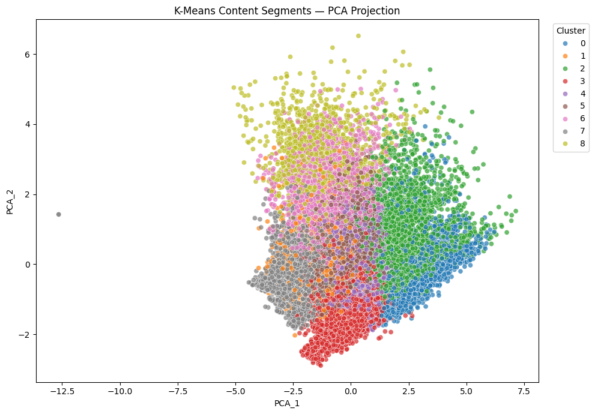
8. PCA on the warehouse
Notebook: PCA_Dataset_Structure_DuckDB
Question: do growing, stable and declining pages occupy different regions of a 2D map of performance features?
- Data: 111,247 warehouse pages, with 10 features from the recent and previous 30 days (log impressions and clicks, CTR, position, position change, volatility).
- Label: the warehouse has no source trend label, so the notebook builds a clearly named proxy (more than 30% down = declining). That gives 63,597 declining, 29,681 stable and 17,969 growing pages.
- Variance: PC1 explains 46.1% and PC2 14.7% (61% together). PC1 is overall traffic volume; PC2 loads on position and position change.
- Separation: declining pages sit lower on PC1 on average (−0.51 vs +0.60 stable and +0.82 growing), but the groups overlap heavily. The silhouette in PCA space is −0.02.
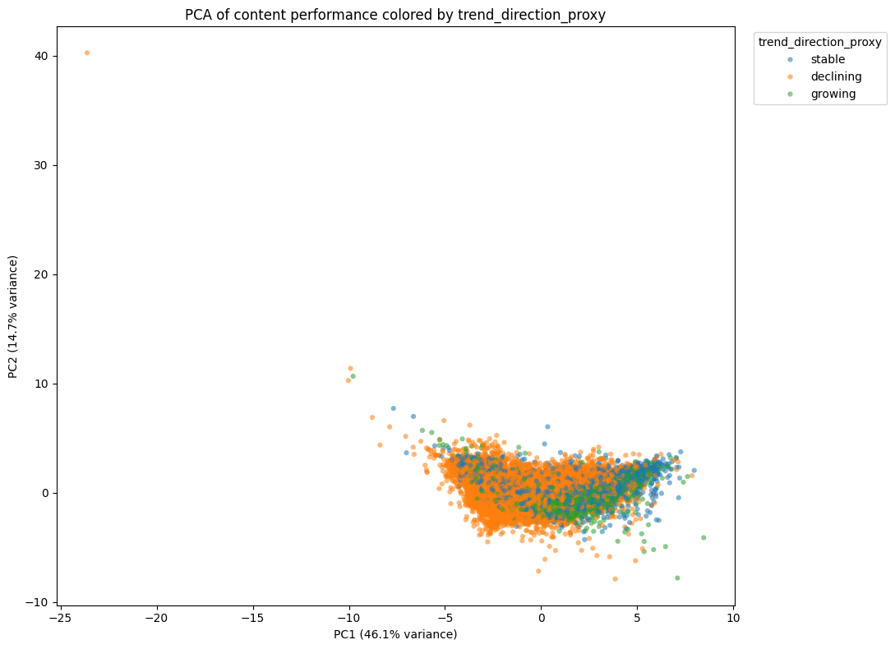
9. Anomaly detection on the warehouse
Notebooks: Anomaly_Detection_Full_DuckDB_Release · DBSCAN_Anomaly_Detection_DuckDB
Question: which content behaves unusually compared with other content and with its own recent history?
- Features: computed in DuckDB for 111,247 pages with at least 100 previous-window impressions. They cover 15 traffic, CTR, position, volatility and query-mix signals.
- Isolation Forest (contamination 0.02, an assumption rather than a measurement) flagged 2,225 pages (2.0%). Each flag is explained with robust z-scores. For example, the top page combined an extreme impression collapse (z −8.4) with very unstable ranking (z 6.8).
- DBSCAN (eps 1.46, min_samples 15, chosen from a k-distance plot and sensitivity table) labeled 4,591 pages (4.1%) as noise. These were split into "potential winners" and "potential failures" for review.
- Both notebooks stress that an anomaly is not automatically bad: surges are anomalies too.
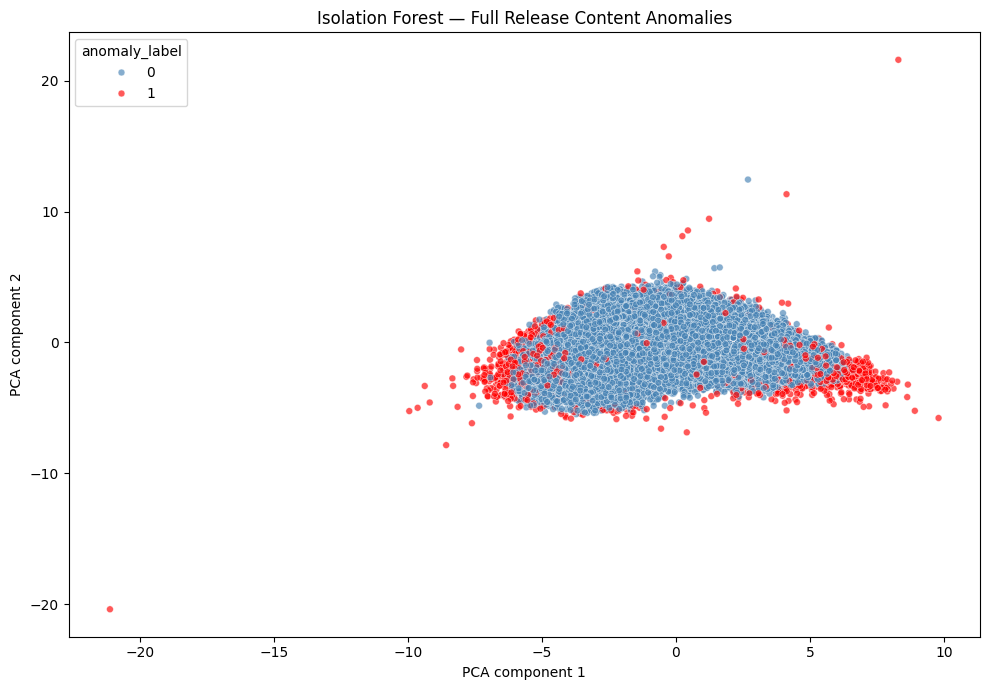
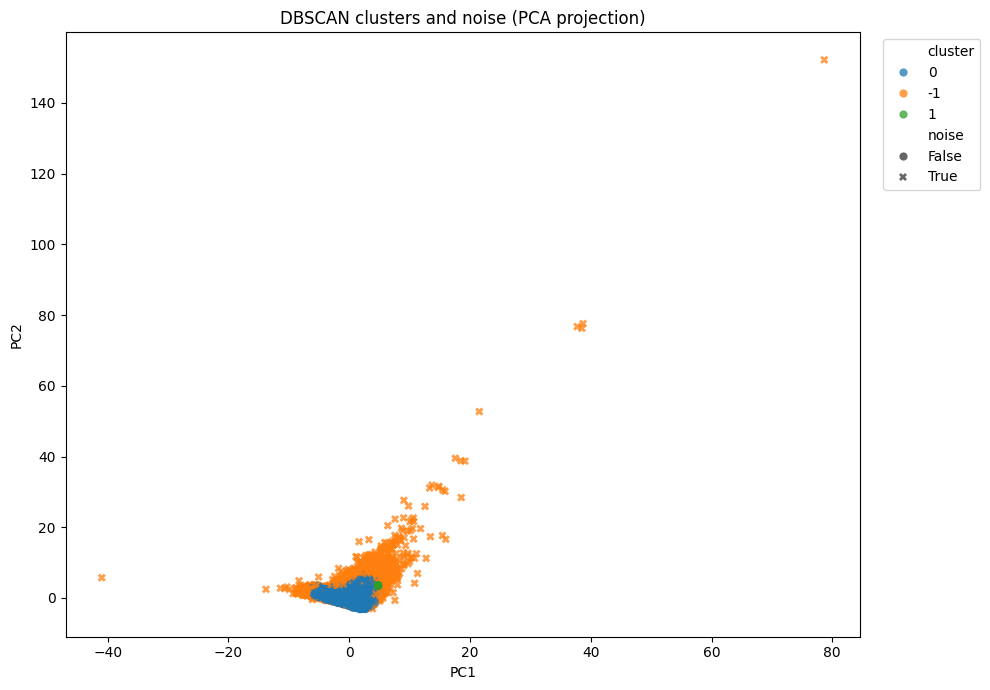
10. Content Refresh Recommendation Engine
Notebooks: v1 rules engine · Stage 1–4, final validation-gated workflow and EDA (README)
This is the largest piece of work in the internship: a warehouse-scale, auditable workflow that turns 78.8 million daily rows into a reviewed refresh queue. It was built in stages, and each stage added a check rather than just a model.
v1 — transparent rules
For 157,464 client–content pairs, four signals are scored: decline severity, search demand, page-one opportunity (position 4–20), and age when a reliable date exists (none was found, so age was left out rather than guessed). The result is HIGH (31,632), MEDIUM (70,718) or LOW (55,114) tiers, with written reasons and suggested actions. The weights are explicit hypotheses, not learned.
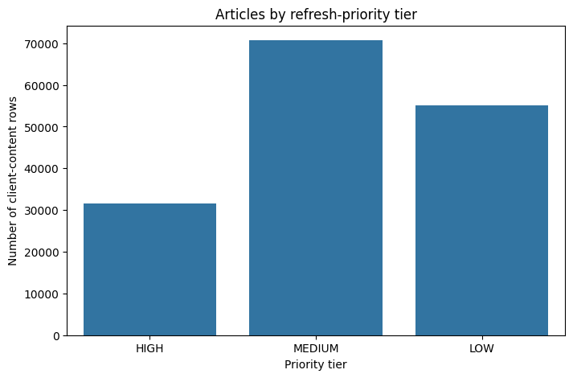
Stages 1–2 — validation and learning to rank
- Coverage audit. Of 43.1 million daily rows in the 120-day window, 27.5 million had no Search Console data. These are kept as missing, not zero. 6,390 duplicate key groups with identical values were deduplicated before aggregation.
- A forward-looking design. Features come from days 60–120 before the data end date (impressions, clicks, CTR, position, volatility, active days). The relevance label comes from the last 60 days: decline grades 0–4, from "less than 20% decline, stable or growth" (28,518 rows) to "80%+ decline" (2,605). A page needs at least 15 observed days in each window.
- Validation gate A checks the aggregation: unique keys, observed-day counts within 0–30, non-negative sums and valid grades. It passed on 78,904 rows from 36 clients, of which 78,900 rows from 32 clients were eligible.
- Evaluation. LightGBM LambdaRank was compared against an impressions-only baseline and the rule score on 5 repeated client splits (25 train / 7 test clients each). Test clients were never sampled. Gate B confirmed the evaluation invariants.
| Held-out clients, 5 splits | Mean NDCG@5 | Mean NDCG@10 | Median NDCG@10 |
|---|---|---|---|
| Rule-based baseline | 0.216 | 0.246 | 0.239 |
| Impressions-only baseline | 0.247 | 0.263 | 0.171 |
| LambdaRank | 0.346 | 0.381 | 0.315 |
LambdaRank beat the rule baseline in 9 of 10 split × k comparisons; the one loss was −0.004. In paired client-level comparisons against the impressions baseline, it won 45 times, tied 4 and lost 17 (73% win rate excluding ties). Variation is large, though: per-client NDCG@5 ranges from 0 to 0.99, and the worst client lost 0.50 against the baseline.
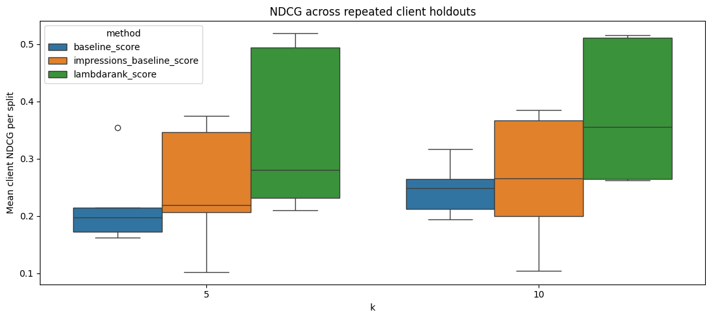
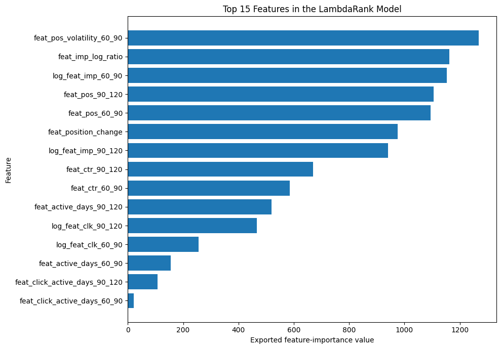
Eligibility, Stage 3 (impact tracking) and Stage 4 (production readiness)
- HIGH needs evidence, not just rank. A page needs at least 21 active feature days, at least 100 feature-window impressions, and a negative trend in the feature windows. On one held-out split (8,363 pages, 7 clients), this gave 6 HIGH, 75 MEDIUM, 7,835 LOW and 447 not eligible.
- Production gate C. The final ranker scores the full eligible population (91,716 pages across 40 clients), not just held-out rows. Keys, scores and within-client ranks were checked, and release readiness passed. A dated snapshot, feature-quality report, drift reference and model bundle are saved per run.
- Stage 3 impact tracking. An editable intervention log (accepted, rejected, refreshed and so on) and a matched-control difference-in-differences design are ready. No real refresh dates have been recorded yet, so the notebook skips the impact estimate rather than inventing one.
11. Weekly assignments (ML-02 to ML-10)
| Card | Notebook | What it established |
|---|---|---|
| ML-02 | Research question | Lane: content freshness and traffic decay. Decision: which pages get editor time. Cost of a wrong call in both directions. |
| ML-03 | Task framing | Binary classification plus ranking, unit = page, metric = Precision@50 against a 54.2% base rate. |
| ML-04 | Data contract | Grain verified (30,000 unique pages). Features, label, context and exclusions defined; clients range from 3 to 7,008 pages. |
| ML-05 | Leakage check | Feature vector plus a leakage hunt with a shallow tree; trend_pct excluded. |
| ML-06 | Signal audit | Staleness: false. Position danger zone: confirmed (inverted U). Staleness × position: mixed. |
| ML-07 | Baseline score | Stale + traffic rule with reason codes; top-20 review (P@20 0.90) and its weak picks. |
| ML-08 | Model | Random forest on a client-grouped split: P@50 0.68 vs 0.64 for the rule. |
| ML-09 | Validation audit | Random split 0.82 vs grouped 0.68; claim rewritten in decision-support language. |
| ML-10 | Action playbook | Ranked queue, a human-review checkpoint, a no-go list (no bulk deletion or AI rewrites), and retrain triggers. |
| ML-11/12 | Capstone paper | Milestones 1–6 consolidated, with 20 client-held-out splits and sensitivity checks. |
12. What the whole project taught
- The split decides the headline. Random page splits flattered every model: ML-09 gave 0.82 vs 0.68, and the capstone 0.85 vs 0.72. In the warehouse tutorial, a first model's 0.93 accuracy against a 0.87 base rate became 0.66 against 0.63 once features were restricted to the window before the label.
- Label-window features are the quiet leak. Previous-30-day impressions (SHAP, needs-refresh, regression) and missing position data (capstone) both mark pages that cannot be labeled
down. They inflate scores without helping rank the pages that matter. - Always keep a naive baseline. "Stale + traffic" was hard to beat at the very top of the list, and "same as last month" beat a tuned XGBoost on warehouse R².
- Forward-looking evaluation is possible on the warehouse. The Recommendation Engine's 60-day gap between features and outcome is the template for the planned early-warning study.
- Every output is decision support. Queues, segments and anomaly lists go to a human with reasons attached. Impact on traffic needs logged interventions, and the tracking for that is built but still empty.
Acknowledgments & data credit
Built on the FlyRank ML Internship dataset (the anonymized content-refresh starter slice and the pseudonymized warehouse release) provided by FlyRank. Thanks to the FlyRank mentors for the data, the problem framing and the internship materials. All notebooks are in the project repository.